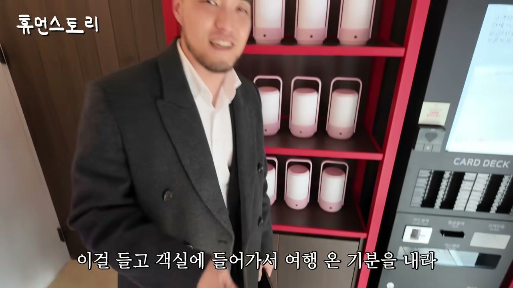
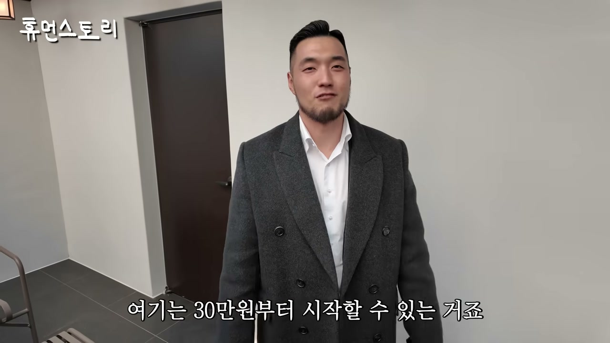
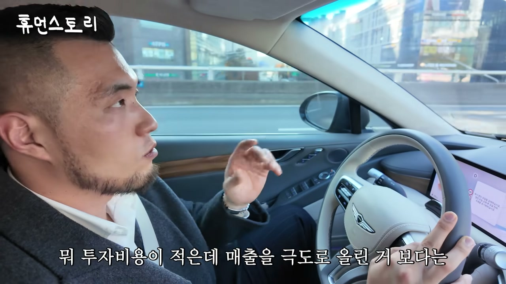
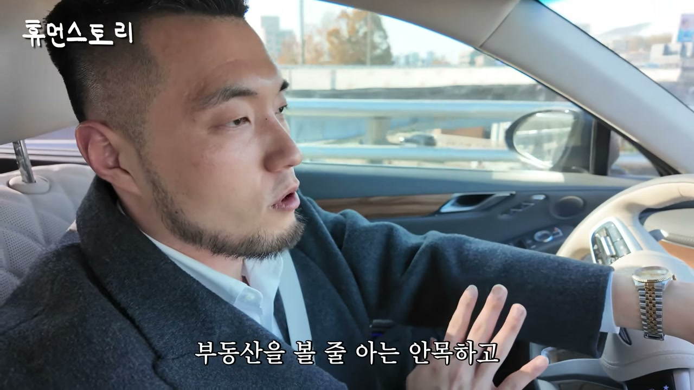
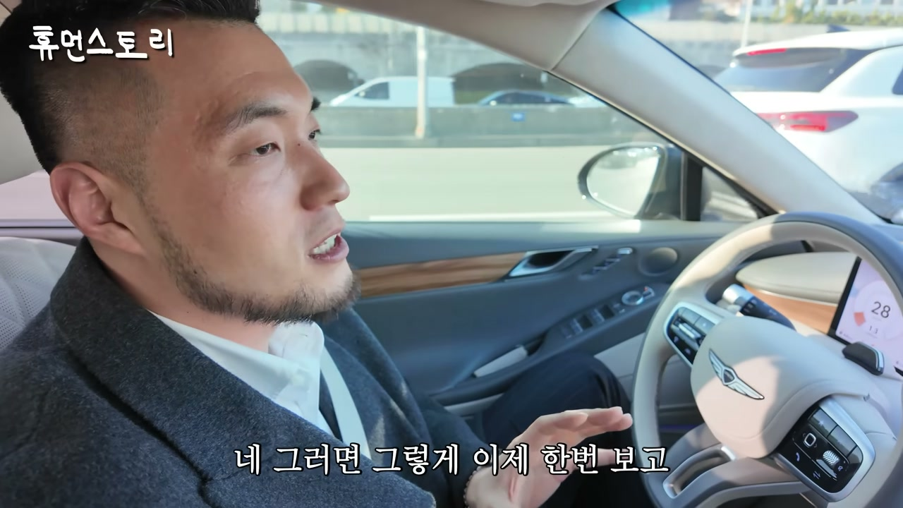
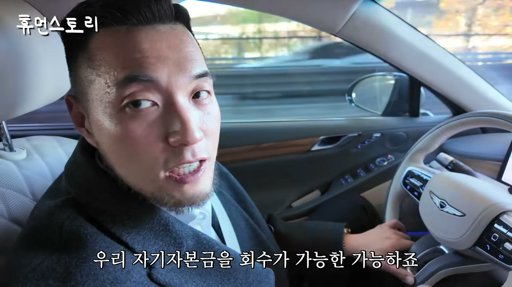
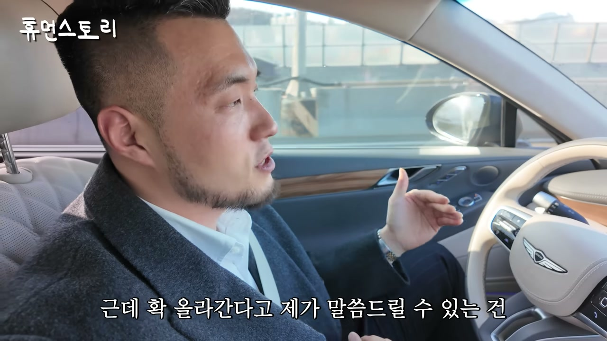
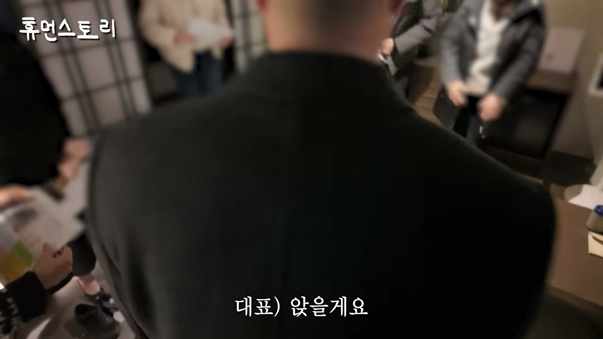
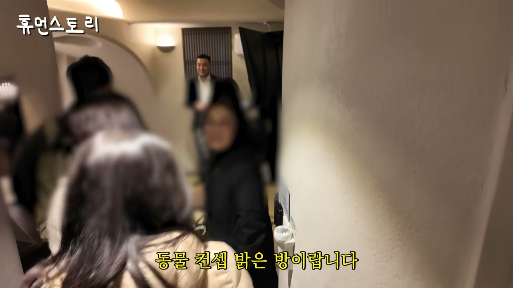
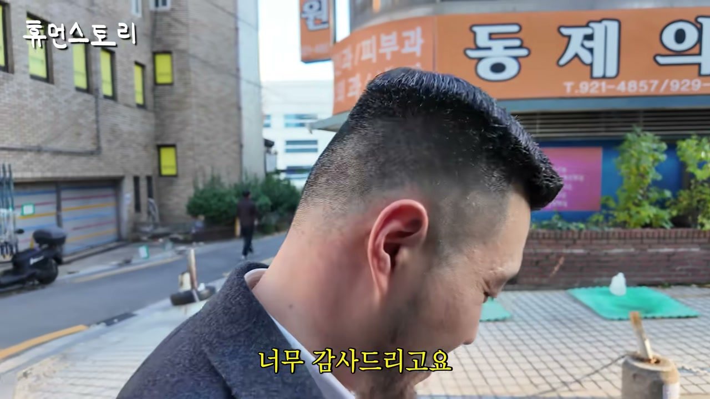

이 글은 전체 3편 중 3편입니다. 긴 영상을 주제 흐름에 맞춰 나누어 정리했습니다.
채널: 휴먼스토리 | 길이: 1:01:14 | 날짜: 2025.11.25
이 글은 전체 3편 중 3편입니다. 본 파트에서는 완성된 리모델링 현장(료칸·동굴·노천탕 콘셉트) 투어, 실제 투자 수익 구조와 레버리지 전략, 좋은 물건을 싸게 사는 방법론, 그리고 대표가 직접 운영하는 창업 강의 현장이 집중적으로 다뤄집니다.
핵심 내용
- 료칸 콘셉트 현장 투어: 다도·등불·게다 등 일본식 요소를 도입한 리모델링 객실은 1박에 약 30만 원을 받는다. 기존 이 동네의 같은 컨디션 객실이 3~4만 원 수준이었다는 점을 감안하면 약 10배에 가까운 단가 상승이다. 대표는 이 모든 소품과 무드등, 특별 기프트(일본 유명 사우나 굿즈)까지 직접 기획해 배치했다. 무드등을 들고 복도로 이동하는 경험 자체를 상품으로 만드는 방식으로 '여행 온 기분'을 연출하는 것이 핵심 설계 의도다.
- 버려진 창고를 노천탕으로 전환: 외부 창고였던 공간을 실내로 들여오고 2개 객실을 통합해 노천탕 객실을 만들었다. 옥상 공간을 활용하면서도 전동 어닝을 설치해 프라이버시를 확보했고, "망원경으로 보는 사람이 있을 수 있다"는 농담이 나올 만큼 노출 문제를 세심하게 다뤘다. 가격은 평일 기준 30만 원부터 시작한다.
- 객실 수를 줄이고 수익률을 높인 역발상: 원래 19객실이던 모텔을 12객실로 재편했는데, 이는 단순한 수익 증가가 아니라 "훨씬 늘어난" 수준의 구조 개선으로 이어졌다. 객실 수가 줄어도 단가가 크게 오르면서 전체 매출이 상승하는 모델을 실증했다. 면적이 비슷한 다른 지점은 FRP(유리섬유 강화 플라스틱) 마감재를 살려 동굴 콘셉트 '케이브(Cave)' 브랜드로 만들었다.
- 동굴 콘셉트 '케이브'의 전략적 의미: 기존의 울퉁불퉁한 저가 마감재를 없애지 않고 오히려 살려서 리모델링했다는 점이 핵심이다. 이는 한정된 예산으로 투자 대비 타당성을 극대화하는 방법론으로, 흥행 시 매우 좋은 ROI를 낸다. 대표는 이를 창업자 대상 8주 교육 과정에서 보여주는 대표 사례로 활용하고 있다.
- 대전 '아늑' 1호점의 실제 투자 사이클: 건물가 9억 원에 인수하고 리모델링에 4억 5천만 원을 투입한 케이스다. 매출은 월 5,500만 원, 순이익은 월 1,500만 원 이상으로, 자기자본금 4억 5천만 원을 2년 만에 회수했다. 감정가가 계속 올라 지가 상승 이익까지 누리는 구조다.
- 레버리지와 대환대출의 구체 구조: 감정가가 9억에서 13억 중반까지 오르면서 추가로 약 6억 원의 대출이 가능해졌다. 이 경우 자기자본 4억 5천만 원이 사실상 회수되고, 추가 대출로 자기자본을 더 줄이는 레버리지 효과가 발생한다. 이후 상호금융에서 1금융으로 대환하며 이자율을 낮추는 것이 일반적 방식이라는 점을 설명했다.
- "지역이 아니라 물건을 봐야 한다": 대표가 가장 많이 받는 질문은 "어디 상권에서 모텔 해야 하나"인데, 그는 지역이 아니라 물건을 봐야 한다고 강조한다. 같은 지역에서도 물건마다 매가가 천차만별이므로, 해당 지역 거래 대비 싸게 사는지 비싸게 사는지의 객관적 지표가 먼저 나와야 한다.
- 실거래가·감정가·LTV 3단계 검증법: 온라인 실거래가를 뒤지고, 감정가를 측정하고, AI 감정을 활용하며, 마지막으로 LTV(주택담보대출비율)를 반드시 확인해야 한다는 프로세스다. 감정가가 높아도 담보가치인정비율이 낮은 지역이면 대출 한도가 낮아져 결국 비싸게 사는 셈이 될 수 있다는 함정을 지적한다.
- 평당 단가 기반 상권 비교: 단순 매매가가 아니라 땅 크기, 땅 모양, 위치를 가중치로 두고 비교해야 한다. 같은 상권에서 다른 거래가 평당 7,000만~8,000만 원인데 본인이 평당 5,000만 원으로 샀다면 지형·구조·위치가 유사한 전제하에 싼 매입이며, 반대로 남들이 8억·7억에 샀다면 감정가 15억이라도 본인은 비싸게 산 것이다.
- 20객실 기준 자기자본 회수 시뮬레이션: 20객실이면 통상 6~7억 원이 필요하고, 중개수수료·취득세 등 부대비용을 합치면 자기자본 8억 원이 들어간다. 월 매출 6,000만 원, 순이익 2,000만 원이면 연 2억 4천만 원으로 4년 내 자기자본 회수가 가능하다. 여기에 감정가 상승 → 대환대출 → 자기자본 감소(8억→6억) 구조가 결합되어 수익률이 크게 개선된다.
- 150개 지점·2만 3천 개 시장: 대표는 지금까지 150개 모텔을 만들었고, 국내 모텔은 약 2만 3천 개가 있다고 밝혔다. 150개는 많이 한 것 같아도 전체 시장 대비 극히 일부이므로 사업 여지가 크고, 시장이 낙후되어 있어 의지 있는 사람들이 빠르게 뭉쳐야 전체 숙박업의 질이 올라간다는 신념을 제시한다.
- 창업 강의 현장 공개: 8주 교육 과정 동안 수십 개 현장을 보여주며, 이번에는 성신여대 인근의 동굴 콘셉트 객실과 파티룸·휴게실이었던 창고 공간을 수강생들에게 견학시켰다. 수강생 구성은 창업 준비자, 이미 모텔을 운영 중인 사람, 부동산 경험자 등 다양하며, 1기 수강생이 실제 투자 후 2기 조교로 참여하는 선순환 구조도 확인된다.
- "무인이 능사는 아니다": 대표는 매출 임팩트가 확실히 오르는 구조라도 무인이 무조건 정답이 아니라고 선을 긋는다. 화장실은 최대한 신축 주거 수준의 쾌적함을 유지해야 하고, 대실 회전율이 매출을 만들어내기 때문에 회전율 관리가 병행되어야 한다는 운영 원칙을 밝힌다.
- K-숙박업 표준 비전: 마무리에서 대표는 중소형 숙박산업이 산업으로 잘 알려지지 않았지만 이 안에서 치열하게 고민하는 젊은 사업가가 있다는 점을 기억해 달라고 요청했다. 그는 스스로 "K-숙박업의 표준이 되는 호텔"을 만들어가겠다는 목표를 밝히며, 시청자들에게 새로운 숙소 트렌드를 알아봐 달라고 당부한다.
상세 분석
1. 료칸 콘셉트 객실 투어와 단가 10배 상승 구조
리모델링된 현장은 겉보기부터 "완전 일본처럼 되어 있다"는 감탄이 나올 정도로 일본 료칸 분위기를 재현했다. 온라인으로 정보를 접하고 찾아오는 고객이 생겼다는 점이 브랜딩의 성과를 보여준다. 현장에는 소장(시공 담당자)이 상주하며 마무리 상태를 점검하고 있었다.
객실 내부는 무인 프런트 호텔로 운영되며, 사우나 모자·수건·일본에서 가장 유명한 사우나 굿즈(스페셜 기프트)까지 비치되어 있다. 프런트 직원이 인사를 건네지만 모르는 사람이라는 점이 오히려 무인·최소 인력 운영의 특징을 드러낸다. 특히 손님은 무드등을 들고 객실로 이동하게 되는데, 이는 "조선시대 등불을 들고 길 찾는 것"에 비유되며 복도가 밝지 않다는 물리적 조건을 서사로 전환한 장치다. 길을 잘못 가도 경보음이 울리지 않는다는 농담도 오갔고, 무드등은 객실에 두면 실제 조명이 되는 실용적 요소이기도 하다. 나막신이 아니라 '게다'라는 일본 슬리퍼, 다도 공간, 사진 찍는 연출까지 더해져 "인력거·포장마차 같은 컨셉을 일부러 잡았다"는 설명이 이어진다.

가격 구조가 이 섹션의 최대 하이라이트다. 해당 방은 1박 30만 원을 받는데, 원래 이 동네에서 이전 컨디션으로는 3~4만 원을 받던 수준이었다. 즉 콘셉트·시공·소품 기획만으로 객실 단가가 약 10배 상승한 셈이다. 리모델링 전에는 엘리베이터조차 없는 낡은 여관이었다는 점이 대비를 더욱 극적으로 만든다. 다만 이 지점은 아직 오픈 전이며, 공사를 마무리하고 체크하는 단계라는 설명이 덧붙여진다.
2. 버려진 창고의 노천탕 전환과 공간 재편 전략
옆방으로 이동한 투어에서는 외부 창고였던 공간을 실내로 들여오고 2개 객실을 통합해 노천탕 객실을 만들었다는 설명이 나온다. "창고를 다 탕으로 만들어 버리는 컨셉"이라는 표현 그대로, 버려진 공간이 프리미엄 객실의 핵심 자산이 되었다. 옥상을 개조한 노천탕은 감탄이 절로 나올 정도로 넓었고, 외부에서 보이지 않도록 전동 어닝이 설치되어 목욕 시 프라이버시가 확보된다. "망원경으로 보시는 분들도 있을 수 있다"는 농담 속에 수영복 착용을 권하는 메인 콘셉트도 언급된다.
가격은 평일 기준 30만 원부터 시작한다. 여기서 중요한 지표가 나온다. 원래 이 지점은 19객실이었는데 현재 12객실로 줄었음에도 수익률은 "더 늘어난 정도가 아니라 훨씬 늘어났다"고 대표는 답한다. 객실 수 감소가 곧 수익 감소가 아니라는 것, 즉 단가와 객단가 상승이 총량을 압도한다는 것을 실증한 셈이다. 창고를 객실로 전환한 만큼 추가 수익이 발생했다는 점도 명확히 언급된다.

3. 이동 중 브랜드 확장 현황과 바쁜 일정
촬영 도중 대표는 수강생들이 기다리고 있어 계속 카메라에서 사라진다는 농담이 오간다. 다음 목적지는 성신여대이며, 대표가 "전국을 다 돌아다닌다"는 질문에 이 브랜드가 전국에 다 있다고 답한다. 소장과 할 얘기가 많지만 "전화로 하라"는 상황이 이어지며, 이번 주 목요일에 강의가 끝난다는 일정도 공개된다. 이 장면은 대표가 단순히 한 지점을 운영하는 사람이 아니라 전국 단위로 브랜드를 확장하고 강의까지 병행하는 사업가라는 사실을 보여준다.
4. FRP 마감재를 살린 동굴 콘셉트 '케이브'
성신여대 인근 지점은 22객실 규모로 면적은 앞서 본 지점과 비슷하지만, FRP(유리섬유 강화 플라스틱)라는 "이상한 마감재"로 덕지덕지 되어 있던 모텔이었다. 대표는 이 마감재를 제거하지 않고 오히려 살려서 동굴 콘셉트로 만들었다. 브랜드 이름은 직관적으로 '케이브(Cave)', 즉 동굴이며, 이 브랜드는 모든 지점을 동굴 콘셉트로 통일한다.
이 사례가 교육 과정에서 중요한 이유는 "한정된 예산으로 기존의 아주 울퉁불퉁했던 마감재를 살려서 리모델링"했다는 점이다. 흥행이 잘 되면 투자 대비 타당성이 매우 좋아지는 구조이므로, 수강생들에게는 실제 투자 판단에 직결되는 사례가 된다. 8주 교육 과정 동안 이미 열몇 개의 현장을 보여줬고, 이번 견학도 그 연장선상에서 "가장 대표적인 곳"으로 선택된 것이다.

5. 대전 '아늑' 1호점 — 투자비 회수와 지가 상승의 실제 사례
대표는 "투자비용이 적은데 매출을 극도로 올린 곳보다 투자 밸런스가 좋았던 곳"으로 대전의 '아늑' 1호점을 소개한다. 구체적 수치는 다음과 같다.
- 건물 인수 가격: 9억 원
- 리모델링 비용: 4억 5천만 원
- 자기자본금: 약 4억 5천만 원 (건물가는 대출로 조달)
- 월 매출: 5,500만 원
- 월 순이익: 1,500만 원 이상
- 회수 기간: 2년 내 시공비·자기자본금 전액 회수
즉 4억 5천만 원을 들여 2년 만에 원금을 회수하고, 이후에는 계속 이익이 남는 구조다. 여기에 감정가가 상승해 지가 상승 이익까지 누린다. 이 모텔은 운영자에게도 가성비가 좋고, 시행사가 들어와 매각할 때도 매출이 아니라 땅 가치를 보고 접근하기 때문에 매각 시장에서도 매력적인 물건이 된다.
6. 감정가 상승과 추가 대출 — 레버리지의 정석
대표는 이 물건이 9억에 매입됐을 당시 감정가가 13억 중반이었고, 리모델링 이후 시공을 마치자 9억 가까이 더 올랐다고 설명한다. 이로 인해 약 6억 원의 추가 대출이 가능해졌고, 실제로 추가 대출을 실행했다. 그 이유는 명확하다. 추가 대출을 받으면 그만큼 자기자본금이 줄어드는 레버리지 효과가 발생한다. 원래 자기자금 4억 5천만 원이 들어가야 하는데, 감정가 상승으로 추가 대출을 받아 자기자본이 사실상 들어가지 않은 것과 같은 상태가 된다.
대표는 이 구조가 "이 사업에 관심 있는 분들의 목표"라고 정리한다. 즉 숙박업은 부동산을 볼 줄 아는 안목과 매출을 올릴 수 있는 운영 기술이 결합된 "종합예술" 사업이며, 한쪽만 잘해서 완성되는 것이 아니라는 점을 강조한다. 인터뷰어가 "핵심적인 질문을 한 것 같다"고 하자 대표는 "엄청 핵심적인 질문"이라고 화답하며, 이 구조가 이 사업의 본질임을 재확인한다.

7. "지역이 아니라 물건을 봐야 한다" — 상권 선택의 오해
대표가 수강생들에게 가장 많이 듣는 질문은 "어디 상권 가서 모텔 해야 되나", "어디가 장사 잘 되나"다. 이에 대한 그의 일관된 답은 "지역을 보는 게 아니라 물건을 봐야 한다"이다. 이유는 같은 지역이라도 물건마다 매가가 천차만별이기 때문이다. 결국 싼 물건을 잡는 것이 핵심이며, 이를 위해서는 지역 요인도 물론 중요하지만 먼저 해당 물건이 그 지역 거래 대비 싼지 비싼지의 객관적 지표가 나와야 한다.
8. 실거래가·감정가·AI 감정·LTV로 검증하는 매입 판단법
대표는 싼 매입을 판정하는 실전 프로세스를 단계적으로 제시한다. 첫째, 온라인에 공개된 실거래가를 모두 뒤진다. 둘째, 감정가를 측정한다. 셋째, 최근에는 부동산 플랫폼에서 AI 감정가를 제공하므로 이를 활용한다. 넷째, 반드시 LTV(주택담보대출비율)를 확인한다.
LTV가 중요한 이유는 담보가치인정비율이 낮은 동네에서는 감정가가 높아도 실제 대출 가능액이 한도로 제한되기 때문이다. 이 경우 감정가 대비 싸게 샀다고 착각하다가 실제로는 더 비싸게 들어가는 결과가 나올 수 있다. 감정가가 실거래가보다 높다고 무조건 싸게 산 것이 아니라는 경고가 이 지점에서 나온다.
9. 평당 단가와 상권 비교로 진짜 '싼 매입' 판별하기
대표는 예시를 든다. 10억짜리 물건의 감정가가 15억이면 일단 5억 싸 보이지만, 그 동네 담보가치인정비율과 LTV를 봐야 한다. 이후에는 부동산 플랫폼에서 모텔만 필터링해 평당 단가를 비교한다. 2021년, 2022년 등 연도별 거래 데이터를 모아 지금 시점에 사는 것이 싼지 비싼지 스스로 판단해야 한다.
같은 상권에서 다른 물건이 10억, 11억, 9억에 거래됐다면 비교가 쉽지만, 다른 곳들이 8억·7억에 거래됐다면 감정가가 15억이어도 비싼 매입이다. 이때는 "그 이유가 있을 것이므로 이유를 찾아내야 한다"고 강조한다. 단순 매매가 비교가 아니라 땅 크기, 땅 모양, 위치를 가중치로 두고 비교해야 한다. 예컨대 본인이 평당 5,000만 원에 샀는데 다른 거래가 평당 7,000만~8,000만 원이라면 지형·구조·위치가 유사한 전제하에 싼 매입이다.


10. 20객실 기준 자기자본 회수 시뮬레이션
대표는 실전 계산을 제시한다. 20객실이면 약 6~7억 원이 필요하고, 여기에 중개수수료·취득세 등 부대비용을 더하면 자기자본 총액이 예를 들어 8억 원이 된다. 이때 월 매출 6,000만 원을 예상하고, 기본 비용과 금융비용을 모두 차감하면 순이익이 약 2,000만 원 남는다. 연간으로는 2억 4천만 원이므로, 총 투입 자기자본 8억 원을 4년이 채 안 되는 기간에 회수할 수 있다.
여기에 리모델링으로 감정가가 상승하면 대환대출을 실행한다. 초기에는 상호금융에서 이자를 많이 내더라도 대출을 크게 받아 레버리지 효과를 누리고, 시공 완료 후 감정가가 오르면 이자율을 낮추기 위해 1금융으로 갈아탄다. 이 과정에서 자기자본 8억 원이 6억 원으로 줄어들 수 있다. 결과적으로 연 2억 4천만 원의 수익이 유지되고, 감정가도 올랐으며, 자기자본은 줄었고, 매각 시에도 더 비싸게 팔 수 있는 구조가 완성된다. 이것이 "좋은 물건을 싸게 들어가는 게 중요한 이유"다.

11. 시공·브랜딩·마케팅 — 두 번째 성공 조건
대표는 좋은 매입이 첫 번째 조건이라면, 그다음은 시공과 브랜딩·마케팅이라고 정리한다. 시공비를 아끼는 방법과 사람들이 찾아오는 숙소를 기획하는 능력은 결국 브랜딩과 마케팅에서 나온다. 그는 "이 두 가지 기능만 탑재해도 성공 확률이 확 올라간다"고 말한다. 이를 데이터로 증명하는 근거는 그가 지금까지 만든 150개 지점의 실제 매출 데이터다. 강의 수강생 중에는 이 데이터를 확인하려고 등록하는 사람도 많으며, 이는 확신을 얻기 위한 장치다. "웬만한 동네는 거의 다 만들어봤다"는 발언은 강의가 이론이 아니라 실질 정보라는 점을 강조한다.
12. 국내 모텔 2만 3천 개 시장과 확장의 여지
대표는 "우리나라 모텔 2만 3천 개가 있고, 아직 많이 했다고 하는데 150개밖에 못했다"고 말한다. 이는 그가 할 수 있는 일이 훨씬 많다는 의미이자, 시장이 워낙 낙후되어 있어 "의지가 있는 사람들이 빨리빨리 뭉쳐야 전체 모텔 시장의 질이 올라간다"는 신념을 담고 있다. 그는 "좋은 숙소들이 더 많이 나왔으면 좋겠다"는 바람을 밝힌다.
13. 강의 현장 견학 — 성신여대 지점
대표는 안산에서 모든 신호를 무시하고 달려왔다고 말할 정도로 바빴고, 고가도로를 타지 못해 15분 지연됐다. 현장에는 수강생들과 어머니로 보이는 분까지 와 있었고, 대표는 90도 폴더 인사까지 해야 한다고 언급했다. 성신여대 지점에서 처음 본 공간은 파티룸·휴게실이었고 이후 창고로 사용되던 버려진 공간이었다. 강의는 목욕탕을 먼저 보고 복도로 올라가 다른 객실들을 보는 순서로 진행되며, 실제 목욕탕처럼 절수형 샤워기를 넣어 목욕탕 느낌을 구현했다. 수강생 구성은 창업자·창업 준비자·기존 모텔 운영자 등이며, 이번 기수는 정원의 3분의 1도 오지 않은 상태라고 밝힌다.

14. 수강생에서 투자자·조교로 이어진 선순환
현장에는 1기 수강생이 조교 역할을 하고 있었다. 이 사람은 1기 수강을 마친 뒤 실제 투자까지 이어갔고, 2기 수강생들의 조교를 자원해서 맡고 있다. 처음 인수한 모텔은 대출까지 다 받아 리모델링까지 완료했으며, "패스트포트"라는 회사를 운영하는 대표다. 대표는 PD를 위해 개인 과외까지 제안하는 농담을 던진다. 이 사례는 강의가 단순 지식 전달을 넘어 실제 투자와 운영 인력으로 이어지는 순환 구조를 보여준다.

15. 밝은 방·어두운 방, 화장실 원칙, "무인이 능사는 아니다"
동굴 콘셉트 지점에는 밝은 방과 어두운 방이 모두 존재한다. 대표는 "어두운 방에서 주무셔보면 왜 어두운 방으로 가는지 아실 것"이라며 대비를 강조한다. 동시에 명확한 규칙이 있다. "화장실은 최대한 신축 주거의 화장실처럼 쾌적하게." 이유는 대실이 회전율을 만들어주기 때문이다. 매출 임팩트가 확실히 오르더라도 "무인이 무조건 능사는 아니다"라고 선을 긋는다. 즉 회전율·쾌적함·객실 다양성을 함께 관리해야 한다는 운영 원칙이다. 창업 준비자뿐 아니라 부동산 경험자들이 숙박 부동산에 관심을 갖고 오는 경우도 많다고 밝힌다.

16. 마무리 — 매출 9천만 원 지점과 K-숙박업 비전
마지막 지점에서 대표는 이곳의 매출이 9천만 원 나온다고 밝힌다. 이 지점은 모두 걸어서 오는 구조이며, 외관은 거의 노후되지 않은 것으로 판단된다. 이후 대표가 수강생들을 메가커피로 모시며 "제일 비싼 거 드세요"라고 말하는 장면으로 마무리된다.
PD는 "오늘 중요한 정보까지 이렇게 알려줘도 되나 싶을 정도로 많이 알려줬다"며 감사를 전했고, 대표는 마지막 발언을 남긴다. "중소형 숙박산업이 산업으로 잘 알려지지 않았지만, 이 안에서도 치열하게 고민하고 열심히 하는 젊은 사업가가 있다는 걸 영상 보시고 기억해 주셨으면 좋겠다. 제가 열심히 K-숙박업의 표준이 되는 호텔들을 만들어 갈 테니까, 그런 곳도 한번씩 이용해 보시고 이런 게 요즘의 숙소 만드는 트렌드구나 알아봐 주셨으면 좋겠다." 이어 "휴먼스토리 화이팅!"으로 영상이 끝난다.

주요 인용 및 발언
"이거를 들고 객실로 이동하는 거예요. 이게 이렇게 들고 가면 우리 왜 옛날에 조선시대에도 이런 거(등불) 들고 길 찾잖아요. 마찬가지로 복도가 그렇게 밝지 않으니까요." — 무드등을 활용한 료칸 콘셉트의 설계 의도
"여기는 30만원부터 시작할 수 있는 거죠. 평일은 30만원 정도요." — 노천탕 객실의 가격 포지셔닝
"원래 이 동네에서 이전 컨디션으로는 3, 4만원 받았겠죠." — 리모델링 전후 단가 대비 약 10배 상승
"여기가 원래 객실이 19객실이요. 19갠데 지금 12개요. 수익률은 더 늘어난 정도가 아니라 훨씬 늘어났죠." — 객실 감축과 수익률 상승의 역설
"한 4억 5천만원 들여서 2년만에 시공비까지 다 회수해버리고 자기자본금 다 회수하고 계속 이익이 남고, 그 다음에 감정가는 또 올라가지고 지가 상승도 계속 받고 있는 그런 모텔이 대전에 있죠." — 아늑 1호점 요약
"감정가가 올라버려서 지금 어떻게 보면 추가 대출을 받은거죠. 추가 대출 받아서 자기 자본은 안 들어간 거네요." — 레버리지 구조의 본질
"숙박업은 부동산을 볼 줄 아는 안목하고 운영을 잘할 수 있는 매출을 올릴 수 있는 기술하고가 더해진 사업이에요. 이게 하나만 다 잘한다고 완성되는 게 아니고 이렇게 종합예술이 필요한 사업인 거예요." — 숙박업의 종합적 성격
"지역을 보시는 게 아니고 물건을 봐야 된다. 물건마다 같은 지역이더라도 매가가 천차만별일 거고, 내가 싼 물건을 잡는다는 거는 지역이 중요한 게 아니고..." — 매입 판단의 핵심 원칙
"감정가가 15억 이라도요. 그게 그 이유가 있을 거니까 이유를 찾아내야 되는거네요." — 싼 매입과 비싼 매입의 판별 기준
"이 두 가지 기능만 탑재해도 성공 확률이 확 올라가요." — 브랜딩과 마케팅의 결정적 역할
"우리나라 모텔 2만 3천개 있고, 저 아직 많이 했다고 하는데 150개밖에 못했기 때문에 우리가 할 수 있는 건 굉장히 많이 있고... 이 시장은 너무 낙후돼 있기 때문에 이렇게 의지가 있는 사람들은 빨리빨리 뭉쳐가지고 저는 좋은 숙소들이 더 많이 나왔으면 좋겠어요." — 시장 확장 비전
"무인이 무조건 능사는 아니다. 화장실은 최대한 신축 주거의 화장실처럼 쾌적하게요. 대실이 그렇게 회전율을 만들어주니까." — 운영 원칙
"제가 열심히 K-숙박업의 표준이 되는 호텔들을 만들어 갈 테니까 그런 곳도 한번씩 이용해 보시고 이런 게 또 요즘의 숙소 만드는 트렌드구나 알아봐 주셨으면 좋겠습니다. 휴먼스토리 화이팅!" — 마무리 발언
결론 및 시사점
이 파트는 "낡은 모텔을 고쳐 매출을 만든다"는 서사를 넘어, 어떻게 하면 낮은 자기자본으로 높은 수익률을 만드는가라는 자본 구조의 문제로 논의를 심화한다. 핵심 메시지는 세 가지다.
첫째, 단가 상승이 객실 수보다 중요하다. 대전 아늑 1호점은 자기자본 4억 5천만 원으로 월 순이익 1,500만 원 이상, 2년 내 회수를 달성했고, 성신여대 지점은 19객실을 12객실로 줄이고도 수익률을 "훨씬" 끌어올렸다. 료칸 콘셉트 객실은 3~4만 원짜리 객실을 30만 원 객실로 바꿨다.
둘째, 좋은 물건을 싸게 사는 판단은 데이터로 검증된다. 실거래가, 감정가, AI 감정, LTV, 평당 단가, 연도별 상권 거래 사례를 비교·가중치화하여 "감정가가 높다 = 싸다"라는 함정을 피해야 한다. 여기에 감정가 상승 후 대환대출(상호금융→1금융)과 추가 대출로 자기자본을 줄이는 레버리지가 결합되면, 8억 원 자기자본이 6억 원으로 줄어들고 수익률은 극대화된다.
셋째, 시공·브랜딩·마케팅이 두 번째 성공 조건이다. 150개 지점의 실제 매출 데이터가 이를 뒷받침하며, 강의는 이 데이터를 기반으로 실질 정보를 제공한다. 시장은 국내 모텔 2만 3천 개 대비 150개밖에 재편되지 않은 초기 단계로, 대표는 "K-숙박업의 표준이 되는 호텔"을 만들어가겠다는 비전을 밝힌다. "무인이 능사는 아니다", "화장실은 신축 주거처럼"이라는 운영 원칙은 매출과 회전율, 고객 경험이라는 세 축을 동시에 관리해야 하는 숙박업의 종합예술적 성격을 압축적으로 보여준다.
결국 이 영상은 낡은 모텔을 부동산 금융과 브랜딩이 결합된 투자 상품으로 재정의하고, 그 방법론을 데이터로 공개함으로써 시청자에게 실질적인 투자 판단 프레임을 제공한다.
댓글
GitHub 이슈 기반 댓글 시스템입니다.